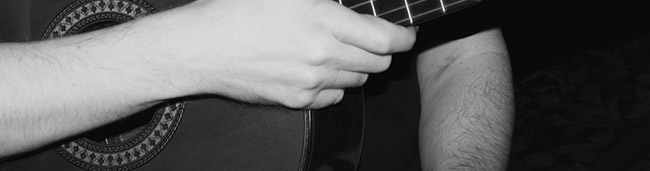

intro
Scott is a Grammy nominated solo guitarist located in Austin, Texas. Although no stranger to the spotlight, he is equally at home performing in an Italian cafe as Carnegie Hall.
While earning his PhD at the University of North Texas, he studied with Manuel Barrueco, Pat Metheny, Ralph Towner, Dominic Miller (guitarist for Sting), and more.
Scott's songbook reveals a sophisticated classical, jazz, and contemporary blend.
His warm and inviting tones create a stimulating upscale ambiance for any event.
A gifted educator, Scott also offers lessons at his Guitar Studio in Austin, TX.
For bookings, lessons, or just to say hi, you can email Scott at simon_phd@proton.me
